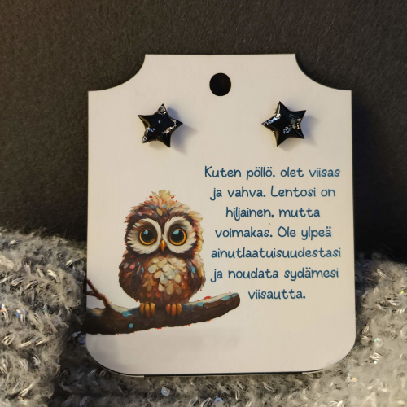
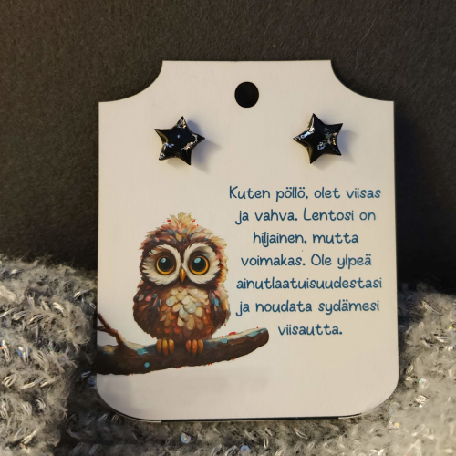
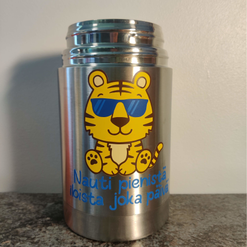
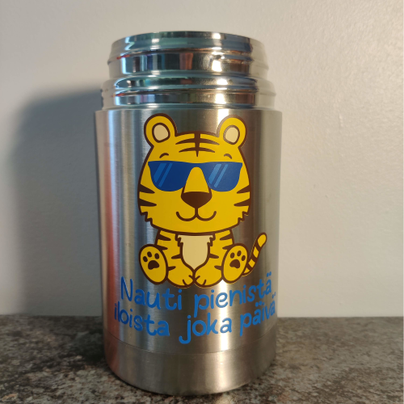

Askartelu on minulle kuin seikkailu luovuuden kirjavassa maailmassa, jossa jokainen uusi projekti
avaa oven uuteen inspiraatioon ja oppimiseen. Vaikka omat sivuni keskittyvät tarkemmin ompeluun,
virkkaukseen ja koirien kanssa touhuamiseen, haluan tällä sivulla tarjota kurkistuksen muihin
askarteluprojekteihin, joita olen kokeillut ja toteuttanut.
Koruaskartelu on yksi niistä, jossa olen päässyt toteuttamaan luovuuttani erilaisten helmien,
metallien ja lankojen avulla. Se tarjoaa mahdollisuuden luoda kauniita ja persoonallisia koruja,
jotka kertovat tarinoita ja heijastavat omaa tyyliäni.
Paperiaskartelu on, jossa pääsen leikkaamaan, liimaamaan ja taittelemaan erilaisia papereita
luodakseni kortteja, kirjanmerkkejä ja muita käytännöllisiä tai koristeellisia esineitä.
Makramee on ihana tapa kokeilla käsillä tekemistä erilaisten solmujen avulla, luoden kauniita ja
boheemeja sisustuselementtejä tai jopa asusteita.
Miniatyyrien maailma on lumonnut minut pienoisten yksityiskohtien ja luovien mahdollisuuksien
avulla. Pieniin esineisiin keskittyminen antaa tilaa suurelle luovuudelle.
Ristipisto tarjoaa minulle rauhallisen hetken keskittyä yksityiskohtiin ja luoda kauniita
kuvioita kangasalustalle.
Tarrojen tekeminen ja vihkojen valmistus ovat pieniä, mutta hauskoja tapoja lisätä
persoonallista kosketusta arjen esineisiin ja pitää luovuus virtanaan.
Vaikka näitä askarteluja ei ole tarpeeksi, jotta jokaiselle kannattaisi omistaa oma sivu, ne ovat
silti tärkeitä osia luovasta matkastani. Toivon, että näiden projektien jakaminen innostaa myös
sinua kokeilemaan rohkeasti uusia ideoita ja löytämään oman luovuutesi polun!
Korut

Vuoden 2023 lopulla löysin intohimon korujen tekemiseen.
Aluksi kokeilin niitä vain huvikseni, mutta onnistuin
yllättäen hyvin. Rohkaistuneena vein korujani myyjäisiin,
ja myös työkaverini ihastuivat niihin. Vaikka kaikki
eivät olleet täydellisiä, sain niistä paljon oppia.
Erityisesti nappikorvakorujen tekeminen on tuonut iloa.
Kuvassa neljä erilaista nappikorvakorua, valmistettu
puulevyistä ja päällystetty paperilla tai kalvolla ja
viimeistelty kestävällä resiinillä.
Paperiaskartelu

Paperiaskartelu on ollut intohimoni lapsesta asti, erityisesti muistan lämpimästi
joulukorttien tekemisen mummuni kanssa. Vaikka askartelu on nykyään harvinaisempaa,
teen edelleen itse kortteja erityistilaisuuksiin, kuten ylioppilasjuhliin.
Olen kehittänyt taitojani laserleikkurin avulla ja luonut entistä tarkempia ja
monimutkaisempia askarteluja, kuten karusellissa pyörivän perhoskortin ja valotaulun.
Ristipisto

Ristipisto on ollut harrastukseni jo ala-asteelta lähtien, ja se on kulkenut mukanani
tähän päivään asti. Välillä teen niitä paljon, kun taas toisinaan saattaa mennä
useampi vuosi ilman pistelyitä. Nykyään käytän purkautuvaa aida-kangasta tai sulavia
ristipistokankaita, joiden avulla voin luoda kuvioita esimerkiksi vaatteisiin, kuten kuvan
vauvan bodyyn. Karusellissa pyörii myös ristipisto Mewtwosta ja Lapraksesta, jotka kuuluvat
tekemääni peittoon yhdessä kolmen muun pokemonin ja neljän elementin kuvion kanssa. Kuvat
perustuvat joko netistä löydettyihin malleihin tai itse luomiini malleihin ohjelman
avulla.
Vinyyli

Tämä harrastus sai uuden sysäyksen, kun hankin vuonna 2023 itselleni Silhouette Cameo 3
-leikkurin. Olen leikannut vinyylistä kuvia, joita olen käyttänyt niin vaatteiden,
korttien kuin korvakorujen koristeluun. Käytin leikkuria myös kuvakarusellin termosastian
koristeluun. Kuvassa näkyvät personoidut pipot, jotka tein lasten valitsemilla kuvilla
heidän opettajilleen. Seuraava askel harrastuksessani oli lämpöprässin hankinta, jotta
kuvat saisi kiinnitettyä tasaisesti etenkin suuremmat kuvat. Haaveilen myös
sublimaatiotulostimesta, jonka avulla voisin luoda värikkäämpiä kuvia entistä paremmin.
Miniatyyri

Miniatyyrien maailma avautui minulle vasta aikuisiällä. Kaikki alkoi ylimääräisestä
kilpikonna-altaasta, jolle emme löytäneet käyttöä. Päätimme sijoittaa sen pihaan portin
pieleen ja siitä alkoi minimaailmojen rakentaminen. Kuvassa näkyvä mökki koristi pihaamme
joulun aikaan, ja olen tehnyt mökin sisustuksen itse lukuun ottamatta kelloa ja kuusta.
Innostus kasvoi entisestään, ja nyt suunnitelmissani on sisustaa ja rakentaa 1:12
mittakaavassa oleva nukkekoti. Ensimmäinen itse tekemäni nukke (näkyy kuvassa) herätti
halun hankkia myös 1:12 mittakaavan nuken. Pitkä tutkinnan jälkeen tilasin itselleni
TBleague 1:12 -nuken. Tällaisia realistisia ja nivellettyjä nukkeja voi hankkia
esimerkiksi Suomessa toimivasta verkkokaupasta
Phicen
Nordic.
Jos miniatyyrien maailma kiinnostaa sinua, pysy kuulolla - saatan pian avata tälle
harrastukselle oman sivun blogissani.

 



 
